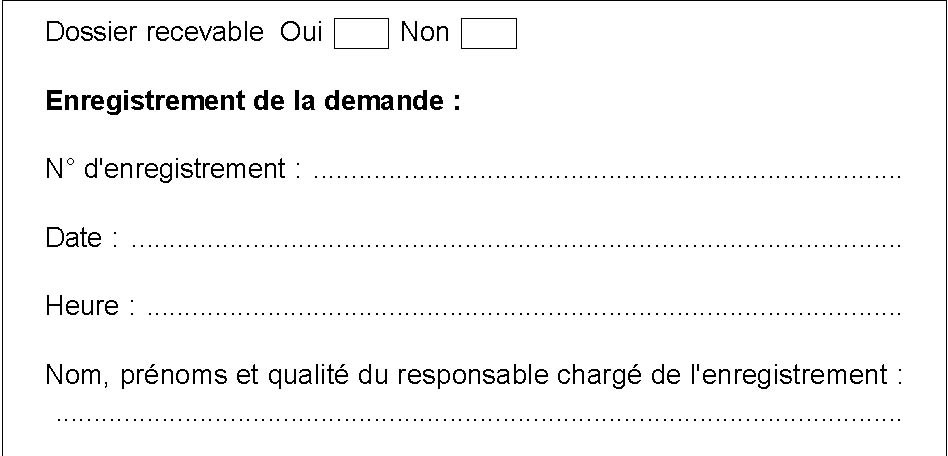

|

|
| ACCUEIL | LOI N°01-10 | DÉCRETS PRÉSIDENTIELS | DÉCRETS EXÉCUTIFS | ARRÊTÉ INTERMINISTÉRIEL | ARRÊTÉS |
|
Décret exécutif N° 02-65
Le Chef du Gouvernement,
Décrète : Article 1 : Conformément aux dispositions de la loi n°01-10 du 11 Rabie Ethani 1422 correspondant au 3 juillet 2001 portant loi minière, notamment ses articles 73, 91 et 153, le présent décret a pour objet de déterminer les dispositions réglementaires applicables pour la constitution des dossiers de demande initiale, de renouvellement, de modification, d'amodiation, de transfert ou de renonciation relatifs aux titres miniers, pour leur dépôt, pour leur enregistrement et pour leur instruction ainsi que de fixer les délais et les procédures de délivrance ou de suspension et de retrait de ces titres miniers. Article 2 : Toute demande de titre minier est faite sur le formulaire correspondant à l'activité dont les modèles sont annexés au présent décret. La demande est déposée, auprès de l'Agence Nationale du Patrimoine Minier, en quatre (4) exemplaires, accompagnée d'un dossier dont la composition est précisée, selon l'activité, dans les articles ci-dessous. Dans le cas d'une demande portant sur un périmètre s'étendant sur plusieurs Wilayas, le nombre d'exemplaires sera multiplié par le nombre de Wilayas que couvre la demande. Les services habilités de cette agence se prononcent séance tenante, à la réception du dossier, sur sa recevabilité. Article 3 : Lorsque la demande est déclarée recevable, il est procédé à son enregistrement, dans un registre coté et paraphé par le président du conseil de l'administration de l'Agence Nationale du Patrimoine Minier, prévu à cet effet, en précisant l'heure et la date de son dépôt. Un accusé de réception, conforme au modèle annexé au présent décret, est remis au demandeur. Article 4 : Lorsque la demande est déclarée irrecevable pour manque ou non-conformité de certaines pièces, une attestation provisoire, portant la date et l‘heure de la présentation du dossier ainsi que la liste des pièces manquantes ou à mettre en conformité est remise au demandeur. Un délai de quinze (15) jours est accordé au demandeur pour compléter son dossier. Durant ce délai aucune demande portant sur le même périmètre ne sera prise en considération. Si la demande est déclarée recevable après la présentation du dossier complété dans le délai fixé, il sera procédé à son enregistrement. Un accusé de réception est remis au demandeur. Ce délai échu, si le dossier complété et /ou mis en conformité n‘est pas représenté pour son enregistrement, toute demande d‘un titre minier, formulée sur le même périmètre par un demandeur, sera prise en considération et enregistrée après examen et prononciation sur sa recevabilité. Article 5 : Pour justifier de ses capacités techniques, le demandeur d'un titre minier doit fournir dans le dossier prévu à l'article 2 ci dessus : - les titres, diplômes et références professionnelles des cadres de la société chargés du suivi et de la conduite des travaux de recherche ou d'exploitation minière ; - la liste des travaux de recherche ou d'exploitation minière auxquels la société a participé durant les trois dernières années, avec une description sommaire des travaux exécutés les plus important ; - un descriptif des moyens techniques prévus pour l'exécution de l'activité minière demandée ; - tout autre document approprié, le cas échéant. Article 6 : Pour justifier de ses capacités financières, le demandeur d'un titre minier doit fournir dans le dossier prévu à l'article 2 ci-dessus : - les bilans et les comptes d'exploitation des trois (3) derniers exercices ; - et tout autre document qu'il jugera approprié pour prouver ses capacités financières. Article 7 : Sont soumises à l'enquête administrative préalable auprès de la (ou des) wilaya(s) sur le territoire desquelles est prévue l'activité minière, les demandes de permis d'exploration, de concession minière, de permis d'exploitation de petite ou moyenne exploitation minière et d‘autorisation d‘exploitation minière artisanale. Tous les frais d'affichage et de publicité inhérents aux enquêtes sont à la charge du demandeur. TITRE IDispositions applicables aux demandes de titres miniers CHAPITRE I DES TITRES MINIERS DE RECHERCHE MINIÊRESECTION 1 DELA PROSPECTION MINIÊRE Article 8 : La demande d'autorisation de prospection est accompagnée : - des statuts de la société ; - d'une carte au 1/50.000ème ou au 1/200.000ème précisant la situation géographique du périmètre et la superficie sollicitée ; - du programme général des travaux projetés ; Article 9 : L'autorisation de prospection est délivrée au demandeur par l'Agence Nationale du Patrimoine Minier, après signature par ce dernier du cahier des charges et délibération du conseil d'administration de l'Agence, dans un délai n'excédant pas un (1) mois à compter de la date d'enregistrement de la demande, contre remise du récépissé de versement du droit d'établissement d'acte. Il est précisé dans cette autorisation : - l'objet de la prospection ;- la zone retenue, son périmètre et sa superficie ; - la date de son expiration ; - l'obligation de communiquer les résultats périodiquement et de respecter les dispositions des articles de la loi minière relatifs au dépôt légal et aux titres miniers ; - l'engagement de ne réaliser aucune tâche ni utiliser aucun produit susceptible de causer un quelconque préjudice à l'environnement.
Article 10 : Le titulaire doit, dés l'obtention de l'autorisation de prospection, en informer les autorités locales et se faire assister, le cas échéant, de ces dernières, lors de l'exécution de travaux sur des terrains appartenant à des privés ou affectés.
Article 11 : La demande de prorogation d'une autorisation de prospection en cours de validité est formulée un (1) mois avant l'expiration de sa période de validité. Elle est déposée pour enregistrement, auprès de l'Agence Nationale du Patrimoine Minier, accompagnée : - d'un mémoire indiquant les travaux déjà effectués, leur montant et les résultats obtenus ; - d'un programme général des travaux complémentaires projetés et leurs coûts. La prorogation de l'autorisation de prospection est attribuée au demandeur par l'Agence Nationale du Patrimoine Minier, après décision de son conseil d'Administration, dans le délai n'excédant pas un (1) mois à compter de la date du dépôt de la demande, contre remise du récépissé de versement du droit d'établissement d'acte. Article 12 : Le titulaire d'une autorisation de prospection peut renoncer à tout moment à cette autorisation, en faisant part de sa décision à l'Agence Nationale du Patrimoine Minier. La renonciation entraîne l'annulation automatique de l'autorisation et l'obligation pour son titulaire d'exécuter, le cas échéant, les mesures prescrites par la police des mines. SECTION 2DEL'EXPLORATION Article 13 : Toute demande d'un permis d'exploration est accompagnée : - des statuts de la société ; - de tous les documents justifiant les capacités techniques et financières du demandeur ou celles qui seront mobilisées ; - d'une note portant sur le programme général et le planning des travaux envisagés, les méthodes et les moyens techniques qui seront employés pour l'exécution de ces travaux et le montant financier que le demandeur s'engage à investir dans la première période de validité du permis ; -de la carte au 1/25.000ème ou 1/50.000ème sur laquelle seront précisées les limites du périmètre et les coordonnées de ses sommets et/ou des points géodésiques ou géographiques remarquables servant à les rattacher ; - le cas échéant, soit de la copie de l'autorisation de prospection et du rapport sur les résultats obtenus lors de cette prospection si la demande est introduite avant l'expiration de la durée de validité de celle-ci ; soit de l'acte portant adjudication ; - d'un mémoire sur l'impact des travaux sur l'environnement et des mesures envisagées pour atténuer cet impact et remettre en état les lieux après achèvement des travaux. Le demandeur peut déposer, le cas échéant, sous pli séparé les informations dont la diffusion lui apparaîtrait de nature à porter atteinte à son droit d'inventeur. Ces informations seront soustraites du dossier. Après enregistrement de la demande, les services de l'Agence Nationale du Patrimoine Minier acheminent auprès de la (ou des) wilaya (s) concernée(s) le dossier comportant les documents et renseignements appropriés pour engager l'enquête administrative. Article 14 : Dés réception du dossier, le (ou les) wali(s) territorialement compétent(s), le soumet(tent), pour enquête, aux services habilités de la wilaya et les Assemblées populaires des communes sur le territoire desquelles est prévue l'exercice de l'activité. Tenant compte des résultats de cette enquête le (ou les) Wali(s) porte(nt) son (leur) avis sur le formulaire prévu à cet effet et l'adresse, dans un délai n'excédant pas deux (2) mois la date de réception du dossier, à l'Agence Nationale du Patrimoine Minier. A défaut de réponse dans ce délai les avis sont réputés favorables. Article 15 : Le permis d'exploration est délivré au demandeur par l'Agence Nationale du Patrimoine Minier, après signature du cahier des charges par ce dernier et délibération du conseil d'administration de l'Agence, dans un délai n'excédant pas (3) trois mois à compter de la date d'enregistrement de la demande, contre remise des récépissés de versement du droit d'établissement d'acte et de paiement de la taxe superficiaire. Il est précisé dans le permis :
Article 16 : Après obtention du titre minier, le titulaire s'adressera au wali territorialement compétent pour l'occupation du terrain limité par le périmètre attribué. Il est assisté dans sa démarche par l'Agence Nationale du Patrimoine Minier. Article 17 : Dans les trois (3) mois qui suivent l'octroi du permis d'exploration, il sera procédé par le titulaire au bornage du périmètre en plaçant une borne solidement fixée à chaque angle du périmètre. La distance séparant deux (2) bornes ne doit pas excéder un (1) kilomètre. Article 18 : La demande d'extension ou de modification d'un permis d'exploration en cours de validité à d'autres substances autres que celles visées par le titre minier ou à un périmètre contigu est déposée auprès de l'Agence Nationale du Patrimoine Minier. Il est précisé : - les références du titre d'exploration ; - la ou les substances minérales et/ou les coordonnées des sommets du périmètre de la zone contiguë pour lesquelles l'extension est demandée. L'instruction de la demande d'extension ou de modification du permis d'exploration est effectuée dans les mêmes formes et conditions que celles dans lesquelles le permis initial a été attribué. Le complément d'enquête ne portera, toutefois, que sur les zones couvertes par l'extension. Le titre minier portant extension ou modification du permis d'exploration est remis au titulaire du titre minier dans un délai n'excédant pas trois(3) mois à compter de la date de réception de la demande, contre remise des récépissés de versement du droit d'établissement d'acte et de paiement de la taxe superficiaire. Il est alors procédé, dans les deux (2) mois qui suivent l'attribution de ce titre minier, à la mise en conformité du bornage initial avec le nouveau périmètre octroyé. Article 19 : La demande de prorogation de la durée de validité du permis d'exploration déposée auprès de l'Agence Nationale du Patrimoine Minier comporte :
- les références du permis d'exploration en cours de validité ; Le demandeur peut déposer, le cas échéant sous pli séparé les informations dont la diffusion lui apparaîtrait de nature à porter atteinte à son droit d'inventeur. Ces informations seront soustraites du dossier. Après constatation du respect des engagements souscrits dans le cahier des charges, et du paiement des taxes et droits exigibles, l'Agence Nationale du Patrimoine Minier instruit la demande de prorogation et attribue le titre minier. Le titre minier portant prorogation du permis d'exploration est remis à son titulaire dans un délai n'excédant pas trois (3) mois à compter de la réception de la demande, contre remise des récépissés de versement du droit d'établissement d'acte et de paiement de la taxe superficiaire. Article 20 : La demande de cession ou de transfert est faite auprès de l'Agence Nationale du Patrimoine Minier. Elle doit être signée conjointement par les deux parties, et l'acte de cession ou de transfert ne peut être passé que sous condition suspensive de l'approbation préalable par l'Agence Nationale du Patrimoine Minier. La demande est assortie d'un dossier comportant : - les références du titre objet de la demande ; - une souscription au cahier des charges par le nouveau titulaire ; - les documents justifiant les capacités techniques et financières du nouveau titulaire ; - un exemplaire de l'acte de cession ou de transfert signé par les deux parties ; - un exemplaire certifié de tous les contrats et accords passés entre ceux des intéressés qui seront, après la cession ou le transfert, titulaires du permis d'exploration ; - le programme général et le planning des travaux que le nouveau titulaire du titre projette d'exécuter pendant la validité en cours ; - le montant financier que le nouveau titulaire s'engage à investir durant la période de validité en cours. L'acte autorisant la cession ou le transfert, établi au bénéfice du nouveau titulaire, est remis à ce dernier par l'Agence Nationale du Patrimoine Minier, après délibération de son conseil d'administration dans un délai n‘excédant pas trois (3) mois à compter de la date du dépôt de la demande contre présentation du récépissé de versement du droit d'établissement d'acte. Article 21 : Le titulaire d'un permis d'exploration peut renoncer à tout moment à ce permis en faisant part de sa décision à l'Agence Nationale du Patrimoine Minier. La renonciation entraîne l'annulation automatique du permis et l'obligation pour son titulaire d'exécuter les mesures prescrites par la police des mines. CHAPITRE II DES TITRES MINIERS D'EXPLOITATION MINIÊRE SECTION 1 DE LA CONCESSION MINIÊRE ET DES PERMIS D'EXPLOITATION DE LA PETITE OU MOYENNE EXPLOITATION MINIERE Article 22 : Toute demande d'une concession minière ou d'un permis d'exploitation de la petite ou moyenne exploitation minière est assortie d'un dossier comportant : - les références du permis d'exploration en vertu duquel elle est demandée ou de l'acte portant adjudication ; - tous les documents justifiant les capacités techniques et financières du demandeur ou celles qui seront mobilisées ; - un rapport portant sur le programme général et le planning des travaux envisagés, ainsi que le montant financier que le demandeur s'engage à investir ; - la carte au 1/25.000ème ou 1/50.000ème sur laquelle seront précisées les limites du périmètre et les coordonnées des sommets et/ou des points géodésiques ou géographiques remarquables servant à les rattacher ; - un mémoire indiquant les résultats des travaux de prospection et d'exploration effectués ; - un mémoire indiquant les paramètres essentiels, résultats de l'étude de faisabilité ;- le plan de développement et d'exploitation du gisement à une échelle appropriée (1/1000ème et 1/5000ème), la nature et les volumes des activités que le demandeur se propose d'exécuter ainsi que la (ou les) rubrique(s) de la nomenclature dans lesquelles l'installation doit être classée ; - l'étude d'impact sur l'environnement et le plan de gestion environnementale ; - une étude exposant les dangers que peut présenter l'installation en cas d'accident et justifiant les mesures propres à en réduire la probabilité et les effets, déterminées sous la responsabilité du demandeur. Cette étude précisera la consistance et l'organisation des moyens de secours privés dont le demandeur dispose ou dont il s‘est assuré le concours en vue de combattre les effets d'un éventuel sinistre ; - l'engagement de remettre tous les deux (2) ans un rapport géologique actualisé. Le demandeur peut déposer, le cas échéant, sous pli séparé les informations dont la diffusion lui apparaîtrait de nature à porter atteinte à son droit d'inventeur. Ces informations seront soustraites du dossier. Après l'enregistrement de la demande, les services de l'Agence Nationale du Patrimoine Minier acheminent auprès de la (ou des) wilaya(s) concernée(s) le dossier comportant les pièces et renseignements appropriés pour y engager l'enquête administrative. Article 23 : Dés réception du dossier, le (ou les) wali(s) territorialement compétent(s), saisit(ssent) les services habilités de la (ou des) wilaya(s) et les Assemblées populaires des communes sur le territoire desquelles est prévue l'activité, pour enquête administrative. A l'issue de cette enquête, le (ou les) wali(s) mentionne(nt) son (leur) avis sur le formulaire prévu à cet effet, et l'adresse(nt), dans un délai n'excédant pas deux (2) mois la date de réception du dossier, à l'Agence Nationale du Patrimoine Minier. Dans le cas d'une installation classée, l'autorisation y afférente est jointe à l'envoie. A défaut de réponse, dans le délai ci-dessus mentionné, les avis sont réputés favorables. Article 24 : Les résultats de l'enquête obtenus, le conseil d'administration de l'Agence Nationale du Patrimoine Minier : - soit transmet, après signature de la convention par le demandeur, le dossier au ministre chargé des mines qui initie la procédure d‘examen et signature du décret exécutif portant octroi du titre minier, lorsqu'il s'agit d'une concession minière; - soit accorde, après signature du cahier des charges par le demandeur, le permis d'exploitation, lorsqu'il s'agit d'une petite ou moyenne exploitation minière. Article 25 : Le titre minier est octroyé à son titulaire contre remise des récépissés de versement du droit d'établissement d'acte et de la taxe superficiaire : - dans un délai n'excédant pas cinq(5) mois à compter de la date d'enregistrement de la demande, lorsqu'il s'agit d'une concession minière ; - dans un délai n'excédant pas quatre(4) mois à compter de la date d'enregistrement de la demande, lorsqu'il s'agit d'une petite ou moyenne exploitation minière. Article 26 : Après obtention du titre minier, le titulaire s'adressera au wali territorialement compétent pour l'occupation du terrain limité par le périmètre attribué. Il sera assisté dans sa démarche par l'Agence Nationale du Patrimoine Minier. Article 27 : Dans les trois (3) mois qui suivent l'octroi de la concession minière ou du permis d'exploitation d'une petite ou moyenne exploitation minière, il sera procédé par le titulaire au bornage du périmètre en plaçant une borne solidement fixée à chaque angle du périmètre. La distance séparant deux (2) bornes ne doit pas excéder cinq cents(500) mètres. Article 28 : La demande de renouvellement de la validité de la concession minière et du permis d'exploitation de la petite ou moyenne exploitation minière et/ou de modification du périmètre, est déposée six (6) mois avant l'expiration de la période de validité en cours du titre minier, à l'Agence Nationale du Patrimoine Minier. La demande comporte : - les références du titre minier dont le renouvellement ou la modification est demandé ; - la ou les substances pour lesquelles le renouvellement ou la modification est demandé ; - la durée sollicitée ;
- les nouvelles limites éventuelles du périmètre demandé ; - du rapport général sur les travaux d'exploitation réalisés dans le cadre du titre en cours de validité, comportant les informations statistiques sur la production extraite et commercialisée ; - du rapport géologique actualisé sur le ou les gisements exploités ou encore en cours d'exploitation ; - un mémoire indiquant les résultats des travaux d'exploration complémentaires effectués ; - un mémoire indiquant les paramètres essentiels, résultats de l'étude de faisabilité actualisée ; - le nouveau plan de développement et d'exploitation du gisement à une échelle appropriée (1/1000ème et 1/5000ème) ; - un rapport détaillé sur les travaux de remise en état des lieux, déjà effectués ; - le cas échéant, l'étude d'impact sur l'environnement et le plan de gestion environnementale actualisés ; - l'engagement de remettre tous les deux (2) ans un rapport géologique actualisé ; - d'une carte au 1/25.000ème ou 1/50.000ème portant la nouvelle localisation du périmètre sollicité et la nouvelle superficie demandée ; - de la nouvelle convention ou du cahier des charges actualisé. Le demandeur peut déposer, le cas échéant, sous pli séparé, les informations dont la diffusion lui apparaîtrait de nature à porter atteinte à son droit d'inventeur. Ces informations seront soustraites du dossier. Lorsque la demande de renouvellement porte sur une superficie dans les limites du périmètre initialement attribué après constatation du respect des engagements souscrits dans la convention ou le cahier des charges ainsi que du paiement des taxes et droits exigibles, l'Agence Nationale du Patrimoine Minier instruit la dite demande et attribue le titre minier. Lorsque la demande de renouvellement inclut une extension du périmètre initialement attribué, l'instruction de la demande et l'attribution du titre portant renouvellement ou modification de la concession minière ou du permis d'exploitation de la petite ou moyenne exploitation minière sont effectuées dans les mêmes formes et conditions que celles dans lesquelles le permis initial a été attribué. Le titre minier portant renouvellement ou modification de la concession minière ou du permis d'exploitation de la petite ou moyenne exploitation minière est remis à son titulaire dans les mêmes délais d'attribution que le titre initial contre remise des récépissés de versement du droit d'établissement d'acte et de paiement de la taxe superficiaire. En cas de modification du périmètre, il est procédé, dans les deux (2) mois qui suivent l'attribution du titre minier, à la mise en conformité du bornage initial avec le nouveau périmètre octroyé. Article 29 : La demande de cession ou de transfert ou d'amodiation d'une concession minière ou d‘un permis d‘exploitation d'une petite ou moyenne exploitation minière est faite auprès de l'Agence Nationale du Patrimoine Minier. Elle doit être signée conjointement par les deux (2) parties et l'acte de cession, ou de transfert ou d'amodiation ne peut être passée que sous condition suspensive de l'approbation préalable par l'Agence Nationale du Patrimoine Minier. La demande est assortie d'un dossier comportant :
- les références du titre objet de la demande ; L'acte autorisant la cession ou le transfert ou l'amodiation, établi au bénéfice du nouveau titulaire, est remis à ce dernier par l'Agence Nationale du Patrimoine Minier, dans un délai n'excédant pas quatre (4) mois, à compter de la date du dépôt de la demande, contre présentation du récépissé de versement du droit d'établissement d'acte. Article 30 : Le titulaire d'une concession minière ou d'un permis d'exploitation de petite et moyenne exploitation minière peut renoncer à tout moment à son titre, en faisant part de sa décision à l'Agence Nationale du Patrimoine Minier. La renonciation entraîne l'annulation automatique du titre minier et l'obligation pour son titulaire d'exécuter les mesures prescrites par la police des mines. SECTION 2 DE L‘EXPLOITATION MINIERE ARTISANALE Article 31 : La demande d‘une autorisation d‘exploitation minière artisanale est déposée auprès de l‘Agence Nationale du Patrimoine Minier. Elle est assortie d‘un dossier comprenant :
-
les références de l‘autorisation de prospection ou du permis de l‘exploration ayant mis en évidence le gisement ou de l'acte portant adjudication ; Le demandeur peut déposer, le cas échéant, sous pli séparé les informations dont la diffusion lui apparaîtrait de nature à porter atteinte à son droit d‘inventeur. Ces informations seront soustraites du dossier. Après l‘enregistrement de la demande, les services de l‘Agence Nationale du Patrimoine Minier acheminent auprès de la (ou des) wilaya(s) concernée(s) le dossier comportant les pièces et renseignements appropriés pour engager l‘enquête administrative. Article 32 : Dés réception du dossier, le wali territorialement compétent, saisit les services habilités de la wilaya et les Assemblées populaires des communes sur le territoire desquelles est prévue l'activité, pour lancer l'enquête administrative. A l‘issue de cette enquête, le wali porte son avis sur le formulaire prévu à cet effet, et l‘adresse dans un délai n‘excédant pas quarante-cinq (45) jours, à l‘Agence Nationale du Patrimoine Minier. A défaut de réponse dans ce délai, l'avis est réputé favorable. Article 33 : L‘autorisation d‘exploitation minière artisanale est délivrée au pétitionnaire, par l‘Agence Nationale du Patrimoine Minier, après signature du cahier des charges par le demandeur et délibération du conseil d‘administration de l‘Agence, dans un délai n‘excédant pas trois (3) mois à compter de la date d‘enregistrement de la demande, contre remise des récépissés du versement du droit d‘établissement d‘acte et de paiement de la taxe superficiaire.
Il est précisé dans l'autorisation :
Article 34 : Après obtention du titre minier, le titulaire s‘adressera au wali territorialement compétent pour l‘occupation du terrain limité par le périmètre attribué. Il sera assisté dans sa démarche par l‘Agence Nationale du Patrimoine Minier. Article 35 : Dans les deux (2) mois qui suivent l‘octroi de l‘autorisation d‘exploitation artisanale, le titulaire procédera au bornage du périmètre. Il doit être placé une borne cimentée à chaque angle du périmètre. La distance séparant deux (2) bornes ne peut excéder 250 mètres. Article 36 : La demande de renouvellement et/ou de modification du périmètre d‘une autorisation d‘exploitation minière artisanale est déposée quatre (4) mois avant l‘expiration de la période de validité en cours du titre minier, auprès de l‘Agence Nationale du Patrimoine Minier. La demande comporte :
- les références du titre minier dont le renouvellement ou la modification est demandée ;
L‘acte portant renouvellement ou modification de l‘autorisation d‘exploitation minière artisanale est remis à son titulaire par l'Agence Nationale du Patrimoine Minier, dans un délai n‘excédant pas (3) mois à compter de la réception de la demande contre remise des récépissés de versement du droit d‘établissement d‘acte et de paiement de la taxe superficiaire. En cas de modification du périmètre il est procédé, dans les deux (2) mois qui suivent l‘attribution du titre minier, à la mise en conformité du bornage initial avec le nouveau périmètre octroyé. Article 37 : La demande de cession ou de transfert ou d‘amodiation d‘une autorisation d‘exploitation minière artisanale est faite auprès de l‘Agence Nationale du Patrimoine Minier. Elle doit être signée conjointement par les deux parties et l‘acte de cession, ou de transfert ou d‘amodiation ne peut être passé que sous condition suspensive de l‘autorisation préalable par l'Agence Nationale du Patrimoine Minier. La demande est assortie d‘un dossier comportant : - les références du titre objet de la demande ; - une souscription au cahier des charges et à tous les engagements pris par le nouveau titulaire ; - les documents justifiant les capacités technique etfinancières du nouveau titulaire ; - un exemplaire certifié du contrat passé entre l'intéressé et celui qui sera après la cession ou le transfert ou l‘amodiation, le titulaire de l'autorisation d‘exploitation artisanale ; - le programme général et le planning des travaux que le nouveau titulaire projette d‘exécuter pendant la validité en cours ; - le montant financier que le nouveau titulaire s‘engage à investir durant la période de validité en cours. L‘acte autorisant la cession ou le transfert ou l‘amodiation, établi au bénéfice du nouveau titulaire, est remis à ce dernier par l‘Agence Nationale du Patrimoine Minier, dans un délai n‘excédant pas (2) mois, à compter de la date du dépôt de la demande contre présentation du récépissé du versement du droit d‘établissement d‘acte. Article 38 : Le titulaire d‘une autorisation d‘exploitation minière artisanale peut renoncer à tout moment à son titre, en faisant part de sa décision pour l‘Agence Nationale du Patrimoine Minier. La renonciation entraîne l‘annulation automatique du titre minier et l‘obligation pour son titulaire d‘exécuter les mesures prescrites par la police des mines. TITRE IIDe la suspension de l‘activite minière et du retrait des titres miniers CHAPITRE I DE LA SUSPENSION DE L‘ACTIVITÉ MINIÊRE Article 39 : Lorsqu‘il est constaté par les agents de la police des mines de l‘Agence Nationale de la Géologie et du Contrôle Minier que le détenteur ou l‘amodiataire du titre minier a commis une ou plusieurs des infractions mentionnées à l‘article 91 de la loi minière ou ne satisfait pas à une ou plusieurs obligations prévues à l‘article 153 de la loi pouvant donner lieu au retrait du titre minier, le président du conseil d‘administration de cette Agence, après délibération du conseil, adresse à ce détenteur ou cet amodiataire une mise en demeure lui fixant un délai d‘un (1) mois soit pour satisfaire à ses obligations, soit pour présenter ses justifications. S‘il s‘agit d‘une concession minière, la mise en demeure dont le délai est fixé à deux (2) mois est également affichée pendant la même période dans les sièges des communes concernées par le titre minier. Un rapport circonstancié est adressé à l‘Agence National du Patrimoine Minier dés notification de la mise en demeure au détenteur du titre. Article 40 : A l‘expiration de ce délai, si les prescriptions consignées dans la mise en demeure n‘ont pas été exécutées, ou si aucune argumentation et justification n‘ont été fournies par le détenteur ou l‘amodiataire du titre minier, il sera prononcé, par le président du conseil d‘administration de l‘Agence Nationale de la Géologie et du Contrôle Minier, la suspension de l‘activité minière pendant une durée de deux (2) mois. Durant cette période le détenteur prendra toutes les dispositions pour prendre en charge les prescriptions édictées par la police des mines. A l‘expiration de ce nouveau délai, s‘il est dûment constaté qu‘aucune argumentation et justification n‘a été fournie ni qu‘aucune des dispositions prescrites n‘a été prise en considération par le détenteur ou l‘amodiataire du titre minier, un dossier portant la proposition de retrait du dit titre minier est alors adressé par l‘Agence Nationale de la Géologie et du Contrôle Minier au président du conseil d‘administration de l‘Agence Nationale du Patrimoine Minier. CHAPITRE II DU RETRAIT DU TITRE MINIER Article 41 : Le retrait du titre minier, prévu aux articles 91 et 153 de la loi n°01-10 du 11 Rabie Ethani 1422 correspondant au 3 juillet, susvisée est prononcé :
Article 42 : L‘acte portant retrait du titre minier est notifié à son titulaire deux (2) mois après la fin de la période de suspension de l‘activité. Le titulaire évincé, a le droit d‘introduire un recours devant les juridictions administratives. TITRE IIIDispositions communes aux titres miniers Article 43 : Les actes relatifs aux titres miniers sont publiés et affichés selon les conditions fixées ci-dessous :
Les frais d'affichage et de publication des actes et extraits relatifs aux titres miniers octroyés sont à la charge du bénéficiaire de ces titres miniers. TITRE IVDispositions finales Article 44 : Durant la période transitoire prévue dans le titre XI de la loi n° 01-10 du11 Rabie Ethani 1422 correspondant au 3 juillet 2001 portant loi minière, notamment ses articles 232 et 233, l‘administration centrale des mines chargée d‘exercer les prérogatives de l‘Agence Nationale du Patrimoine Minier et de l‘Agence Nationale de la Géologie et du Contrôle Minier appliquera les dispositions du présent décret. Hormis la concession minière, les permis et autorisations d‘exercice d‘une activité minière sont attribués, pendant cette période, sous la forme d‘arrêtés signés par le Ministre chargé des mines. Ces arrêtés sont valables jusqu‘à l‘émission des titres miniers définitifs par l‘Agence Nationale du Patrimoine Minier. Article 45 : Le présent décret sera publié au Journal Officiel de la République Algérienne Démocratique et Populaire.
Fait à Alger, le : 23 Dhou El Kaada 1422 correspondant au 6 février 2002. REPUBLIQUE ALGERIENNE DEMOCRATIQUE ET POPULAIRE AGENCE NATIONALE DU PATRIMOINE MINIER FORMULAIRE DE DEMANDE D'AUTORISATION DE PROSPECTION DEMANDEUR : Société/Personne morale : ................................................................................ Pays d'origine : .................................................................................................. Statut juridique du demandeur : ........................................................................ Identification fiscale : .......................................................................................... Nom et prénoms du représentant dûment mandaté : ........................................ Adresse où recevoir les notifications :................................................................ Tél ............................... Fax : ............................... E. Mail : ................................ PERIMETRE OBJET DE LA PROSPECTION : * Localisation administrative :
Lieu dit : ............................................................
* Coordonnées topographiques du périmètre (système de projection à préciser) : ....................................................................................................................................
* Localisation du point d'origine : ...................................................................... * Superficie du périmètre : ................................................................................
*
Statut juridique du terrain : ..............................................................................
OBJET DE LA DEMANDE DU PERMIS : * Substance(s) objet(s) de la demande : ..........................................................
*
Durée des travaux et date de démarrage prévue : ........................................ Je joins à la présente demande tous les documents exigés par la réglementation. Le demandeur : Nom, prénoms et qualité du signataire PARTIE RESERVEE A L'AGENCE NATIONALE DU PATRIMOINE MINIER 
Fait à ........................... Le ........................................ REPUBLIQUE ALGERIENNE DEMOCRATIQUE ET POPULAIRE AGENCE NATIONALE DU PATRIMOINE MINIER FORMULAIRE DE DEMANDE DU PERMIS D'EXPLORATION DEMANDEUR : Société/Personne morale : ................................................................................ Pays d'origine : .................................................................................................. Statut juridique du demandeur : ........................................................................ Identification fiscale : .......................................................................................... Nom et prénoms du représentant dûment mandaté : ........................................ Adresse où recevoir les notifications :................................................................ Tél ............................... Fax : ............................... E. Mail : ................................ PERIMETRE OBJET DE L‘EXPLORATION : * Localisation administrative :
Lieu dit : ............................................................ * Coordonnées topographiques du périmètre (système de projection à préciser) : ....................................................................................................................................
* Localisation du point d'origine : ...................................................................... * Superficie du périmètre : ................................................................................ * Statut juridique du terrain : .............................................................................. OBJET DE LA DEMANDE D'AUTORISATION : * Substance(s) objet(s) de la demande :............................................................ * Durée des travaux et date de démarrage prévue :.......................................... Je joins à la présente demande tous les documents exigés par la réglementation. Le demandeur : Nom, prénoms et qualité du signataire
PARTIE RESERVEE A L'AGENCE NATIONALE DU PATRIMOINE MINIER
PARTIE RESERVEE A L'ADMINISTRATION LOCALE
Avis du Wali : Favorable : ................ Défavorable : ................. Commentaire :
............................................................................................................................
Date et signature du Wali REPUBLIQUE ALGERIENNE DEMOCRATIQUE ET POPULAIRE AGENCE NATIONALE DU PATRIMOINE MINIER FORMULAIRE DE DEMANDE D'UNE CONCESSION MINIERE DEMANDEUR : Société/Personne morale : ................................................................................ Pays d'origine : .................................................................................................. Statut juridique du demandeur : ........................................................................ Identification fiscale : .......................................................................................... Nom et prénoms du représentant dûment mandaté : ........................................ Adresse où recevoir les notifications :................................................................ Tél ............................... Fax : ............................... E. Mail : ................................ PERIMETRE OBJET DE L'EXPLOITATION : * Localisation administrative :
Lieu dit : ............................................................ * Coordonnées topographiques du périmètre (système de projection à préciser) : ....................................................................................................................................
* Localisation du point d'origine : ...................................................................... * Superficie du périmètre : ................................................................................ * Statut juridique du terrain : .............................................................................. PARTIE EXPLOITATION :
*
Réserves géologiques : ....... Je joins à la présente demande tous les documents exigés par la réglementation. Le demandeur : Nom, prénoms et qualité du signataire PARTIE RESERVEE A L'AGENCE NATIONALE DU PATRIMOINE MINIER
PARTIE RESERVEE A L'ADMINISTRATION LOCALE
Avis du Wali : Favorable : ................ Défavorable : ................. Commentaire :
............................................................................................................................
Date et signature du Wali
REPUBLIQUE ALGERIENNE DEMOCRATIQUE ET POPULAIRE AGENCE NATIONALE DU PATRIMOINE MINIER
FORMULAIRE DE DEMANDE DU PERMIS DEMANDEUR : Société/Personne morale : ................................................................................ Pays d'origine : .................................................................................................. Statut juridique du demandeur : ........................................................................ Identification fiscale : .......................................................................................... Nom et prénoms du représentant dûment mandaté : ........................................ Adresse où recevoir les notifications :................................................................ Tél ............................... Fax : ............................... E. Mail : ................................ PERIMETRE OBJET DE L'EXPLOITATION : * Localisation administrative :
Lieu dit : ............................................................ * Coordonnées topographiques du périmètre (système de projection à préciser) : ....................................................................................................................................
* Localisation du point d'origine : ...................................................................... * Superficie du périmètre : ................................................................................ * Statut juridique du terrain : .............................................................................. PARTIE EXPLOITATION :
*
Réserves géologiques : ....... Je joins à la présente demande tous les documents exigés par la réglementation. Le demandeur : Nom, prénoms et qualité du signataire PARTIE RESERVEE A L'AGENCE NATIONALE DU PATRIMOINE MINIER
PARTIE RESERVEE A L'ADMINISTRATION LOCALE
Avis du Wali : Favorable : ................ Défavorable : ................. Commentaire :
............................................................................................................................
Date et signature du Wali
REPUBLIQUE ALGERIENNE DEMOCRATIQUE ET POPULAIRE AGENCE NATIONALE DU PATRIMOINE MINIER
FORMULAIRE DE DEMANDE D'AUTORISATION DEMANDEUR : Société/Personne morale : ................................................................................ Pays d'origine : .................................................................................................. Statut juridique du demandeur : ........................................................................ Identification fiscale : .......................................................................................... Nom et prénoms du représentant dûment mandaté : ........................................ Adresse où recevoir les notifications :................................................................ Tél ............................... Fax : ............................... E. Mail : ................................ PERIMETRE OBJET DE L'EXPLOITATION : * Localisation administrative :
Lieu dit : ............................................................ * Coordonnées topographiques du périmètre (système de projection à préciser) : ....................................................................................................................................
* Localisation du point d'origine : ...................................................................... * Superficie du périmètre : ................................................................................ * Statut juridique du terrain : .............................................................................. PARTIE EXPLOITATION :
*
Réserves géologiques : ....... Je joins à la présente demande tous les documents exigés par la réglementation. Le demandeur : Nom, prénoms et qualité du signataire PARTIE RESERVEE A L'AGENCE NATIONALE DU PATRIMOINE MINIER
PARTIE RESERVEE A L'ADMINISTRATION LOCALE
Avis du Wali : Favorable : ................ Défavorable : ................. Commentaire :
............................................................................................................................
Date et signature du Wali
|
|||||||||||||||||||||||||||||||||||||||||||||||||||||||||||||||||||||||||||||||||||||||||||||||||||||||||||||||||||||||||||||||||||||||||||||||||||||||||||||||||||||||||||||||||||||||||||||||||||||||||||||||||||||||||||||||||||||||||||||||||||||||||||||||||||||||||||||||||||||||||||||||||||||||||||||